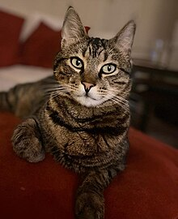
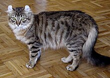
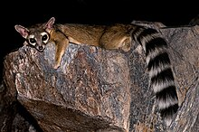

CatPhotoApp
Cat Photos
Chúng ta ở đây yêu mèo
một số hình ảnh về mèo dễ thương Tại đây

Thông tin về mèo
Những thứ mèo thích

- 1. Săn mồi
- 2. Môi trường sống lý tưởng
- 3. Ngủ mọi lúc
- 4. Mặt trời
- 5. Cào móng
Những thứ mèo ghét

- 1. Mèo rất ghét cảm giác cô đơn
- 2. Mèo ghét khay vệ sinh bị bẩn
- 3. Mèo ghét ăn phải thức ăn hỏng, ôi thiu
- 4. Mèo rất ghét uống thuốc
- 5. Mèo ghét bị cưng nựng quá hung hăng
- 6. Mèo ghét cạnh tranh với những con mèo khác
- 7. Mèo ghét sự ồn ào
Giống mèo
| giống mèo |
Nguồn gốc |
Loại |
kiểu cơ thể |
loại lông và chiều dài |
Hoa văn lông |
Hình ảnh |
| Abyssinian
| Không xác định, nhưng có thể từ Afro-Á, có khả năng là Ethiopia |
Tự nhiên |
Bán ngoại lai |
Ngắn |
Vằn tích |
 |
| Aegean |
Hy Lạp |
Tự nhiên |
Trung bình |
Bán dài |
Đa màu |
 |
| American Bobtail |
Hoa Kỳ |
Đột biến của đuôi ngắn |
Cobby (cơ bắp, chắc nịch) |
Bán dài |
Tất cả |
 |
| American Curl |
Hoa Kỳ |
Đột biến |
Bán ngoại lai |
Bán dài |
Tất cả |
 |
| American Ringtail |
Hoa Kỳ |
Đột biến |
Ngoại lai |
Bán dài |
Tất cả |
 |